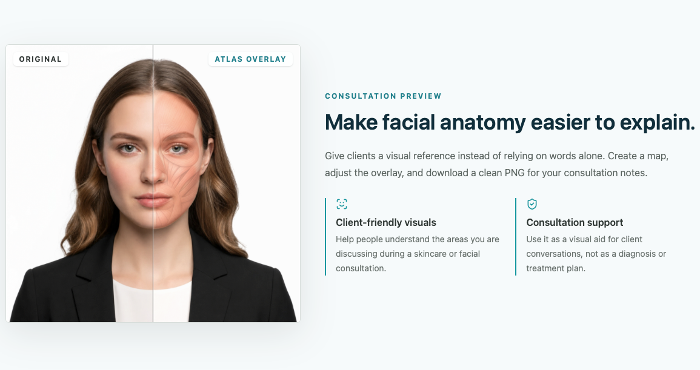

Facial anatomy is hard to explain with words alone.
Visual Documentation / Consultation Support
Facemap
A browser-based facial anatomy overlay tool built to support clearer aesthetic consultation visuals and clinical documentation.
Use visible landmarks to align a non-diagnostic anatomy reference.
Upload, landmark mapping, muscle overlay controls, and PNG export.
Multiview capture and 2.5D anchor refinement.
Clinical Problem
Consultations often require explaining facial regions, muscle names, and treatment context. A plain photo or verbal explanation can be difficult to review later.
Solution
I built a visual reference tool that overlays estimated facial muscle regions on a front-facing photo for consultation and documentation support.
My Role
Physician workflow analyst, anatomy model designer, frontend builder, and implementation tester.
Key Features
- Front photo upload with browser-based face landmark detection
- Semantic landmark mapping and anatomical anchor estimation
- SVG facial muscle overlay with opacity, scale, and offset controls
- Muscle on/off controls, debug views, and PNG export
Technology Used
Next.js, React, TypeScript, MediaPipe Face Landmarker, SVG overlays, canvas export, Tailwind CSS, Cloudflare/Vinext tooling.
Privacy Design
The MVP runs image analysis in the browser and does not upload or permanently store photos. Public portfolio images use non-patient demo visuals only.
What I Learned
Visual clinical tools need clear limits, adjustable overlays, transparent assumptions, and workflow fit before adding more complex 3D reconstruction.
Important Limitation
Facemap is not a diagnostic tool and does not determine treatment or injection locations. Overlay output is an educational reference that requires clinical judgment.
Screenshot
Sanitized demo image only. No patient data, credentials, or private clinic information.
